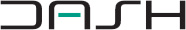

Research-backed thesis
Academic research and Ziller’s own analysis support the founder-led investment thesis.
Ziller provides advisers access to a concentrated portfolio of exceptional founder-led businesses, built on the belief that founder-led companies can be a powerful source of long-term outperformance.
Over the past 20 years, Ziller’s analysis suggests founder-led stocks have outperformed the broader equity market by approximately 3.3% per annum. That’s roughly double the performance of the broader market over the 20-year period.
Ziller believes this outperformance is not accidental. Founder-led businesses often combine strong alignment, decisive capital allocation and a deep commitment to innovation, qualities that can flow through the workforce, the product and the financials, ultimately supporting long-term share price performance.
For advisers seeking more than broad market exposure, founder-led businesses offer a compelling source of differentiated returns.
3.3% alpha over 20 years1
Founder-led businesses have outperformed over the long term, reinforcing the case for founder-led investing as a differentiated global equities strategy.
If you would like to learn more about the founder-led advantage, speak with our team.
Past performance is not a reliable indicator of future performance.
Founder quality sits at the centre of Ziller’s investment process. Through intensive founder assessment, business quality analysis and disciplined valuation, Ziller builds a highly selective portfolio of 15 to 25 global founder-led companies chosen for their ability to adapt, grow and compound shareholder value over time.
Click to learn about the founder
Founder-led businesses have historically delivered strong long-term investment outcomes. For advisers, Ziller offers a focused and differentiated way to access that opportunity.
The strategy also provides targeted exposure to key structural growth themes reshaping industries, where founders are often best positioned to identify opportunities early, allocate capital decisively and drive innovation.
For advisers, that creates a clearer way to invest in global equities, supported by both long-term outperformance and exposure to the growth themes shaping the decade ahead.
If you’d like to explore how this strategy could fit within client portfolios, speak with our team.
Contact usThe case for founder-led investing does not rest on conviction alone. It is supported by clear evidence, a disciplined investment process and strong fund performance.
Academic research and Ziller’s own analysis support the founder-led investment thesis.
Academic research and Ziller’s own analysis support the founder-led investment thesis.
The fund has generated net returns of 22.6% p.a. since inception (1 November 2022), versus 18.5% for the benchmark as at 30 June 2026.2
If you’d like to discuss the strategy, the process or the fund’s performance in more detail, speak with our team.
Contact usA practical way to access the strategy.
The Ziller Global Fund Active ETF is the vehicle through which advisers can access Ziller’s founder-led strategy.
As an ASX-listed Active ETF, it offers a transparent and practical way to implement the strategy within client portfolios.
Available via major investment platforms or directly through the ASX.
ASX: ZILR

Before investing, advisers should consider the PDS and TMD.
Invest nowInterested in learning more about the founder-led advantage, the strategy behind it, or how the fund may fit within client portfolios? Speak with the Ziller team.
1 Based on an analysis of MSCI All Country World Index Constituents from 2006 – 2026 by Ziller Funds Management. All Stocks = MSCI All Country World Index (AUD). Founder-led stocks have been chosen based on Ziller’s experience and selections are subjective and in no way meant to be definitive or exhaustive. Whilst every effort has been made to ensure that the information is accurate; its accuracy, reliability or completeness is not guaranteed. Data has been sourced from MSCI and LSEG. Past performance is not a reliable indicator of future performance.
2 Past performance is not a reliable indicator of future performance.